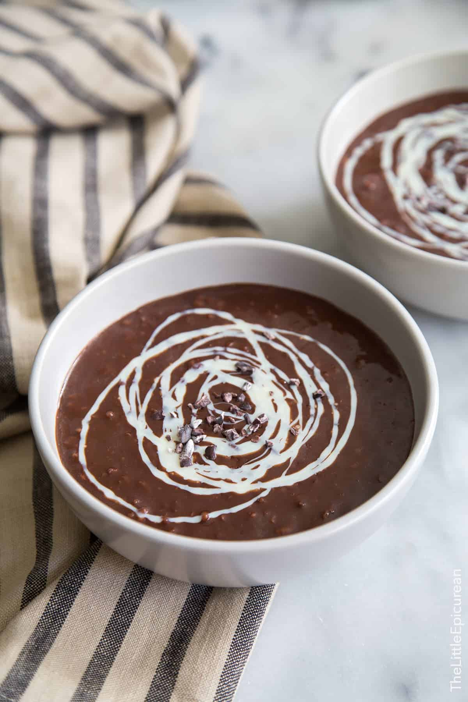

Champorado

The food I eat often at school.
Champorado is a comfort food that is often eaten for an extra boost of energy at school or work.
It consists of tablea (chocolate tablets) or grounded cocoa powder and glutinous rice.
Ingredients:
- 1 cup glutinous rice* (see notes), rinsed and drained
- 6 cups water
- pinch fine sea salt
- ¼ cup dutch processed unsweetened cocoa powder
- 3 oz (85 g) 90% dark chocolate, roughly chopped
- ¼ cup dark brown sugar, packed
Steps:
- Combine rice, water, and salt in a heavy bottom sauce pot. Set over medium-high heat and bring to a boil.
- Reduce heat to a simmer. Stir rice every 3 minutes or so.
Continue to heat uncovered for 15-20 minutes until is rice is cooked through. Rice should be soft and porridge will thicken.
- Add cocoa powder, chopped chocolate, and brown sugar. Stir to combine. Continue to cook on low heat just until chocolate and sugar have melted. Remove from heat.
- Porridge can be enjoyed warm or chilled. Serve with sweetened condensed milk or topping of choice.
Go back